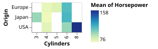
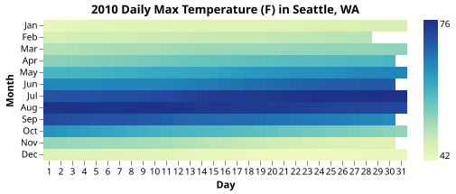
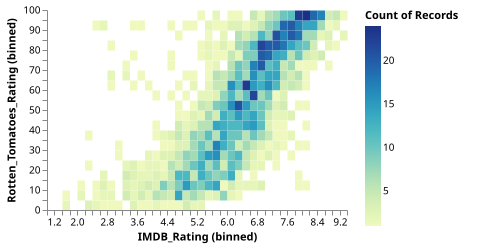
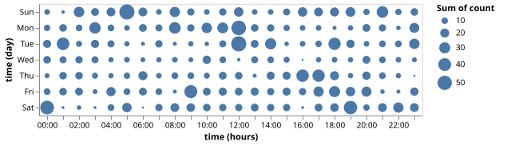
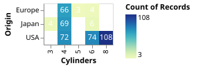
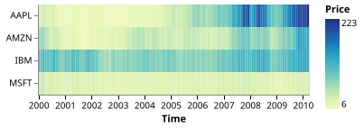
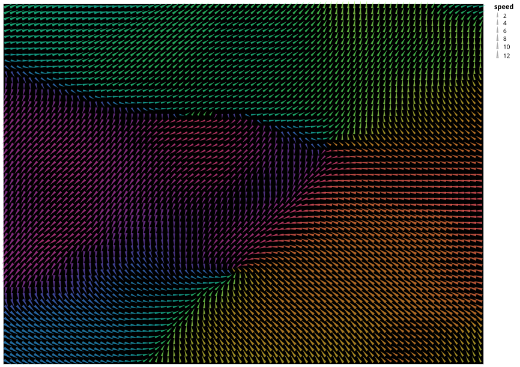

Table-based Plots
Table Heatmap
using VegaLite, VegaDatasets
dataset("cars") |>
@vlplot(:rect, y=:Origin, x="Cylinders:o", color="mean(Horsepower)")
Annual Weather Heatmap
using VegaLite, VegaDatasets
dataset("seattle-temps") |>
@vlplot(
title="2010 Daily Max Temperature (F) in Seattle, WA",
:rect,
x={
"date:o",
timeUnit=:date,
title="Day",
axis={labelAngle=0,format="%e"}
},
y={
"date:o",
timeUnit=:month,
title="Month"
},
color={
"temp:q",
aggregate="max",
legend={title=nothing}
},
config={
view={
strokeWidth=0,
step=13
},
axis={
domain=false
}
}
)
2D Histogram Heatmap
using VegaLite, VegaDatasets
dataset("movies") |>
@vlplot(
:rect,
width=300, height=200,
x={:IMDB_Rating, bin={maxbins=60}},
y={:Rotten_Tomatoes_Rating, bin={maxbins=40}},
color="count()",
config={
view={
stroke="transparent"
}
}
)
Table Bubble Plot (Github Punch Card)
using VegaLite, VegaDatasets
dataset("github") |>
@vlplot(
:circle,
y="day(time):o",
x="hours(time):o",
size="sum(count)"
)
Layering text over heatmap
using VegaLite, VegaDatasets
cars = dataset("cars")
@vlplot(
data=cars,
y="Origin:o",
x="Cylinders:o",
config={
scale={bandPaddingInner=0, bandPaddingOuter=0},
text={baseline=:middle}
}
) +
@vlplot(:rect, color="count()") +
@vlplot(
:text,
text="count()",
color={
condition={
test="datum['count_*'] > 100",
value=:black
},
value=:white
}
)
Lasagna Plot (Dense Time-Series Heatmap)
using VegaLite, VegaDatasets
dataset("stocks") |>
@vlplot(
width=300,
height=100,
transform=[{filter="datum.symbol!=='GOOG'"}],
mark=:rect,
x={
"date:o",
timeUnit=:yearmonthdate,
title="Time",
axis={
format="%Y",
labelAngle=0,
labelOverlap=false,
labelColor={
condition={
test={
field="value",
timeUnit=:monthdate,
equal={month=1,date=1}
},
value="black"
},
value=nothing
},
tickColor={
condition={
test={
field="value",
timeUnit=:monthdate,
equal={month=1,date=1}
},
value="black"
},
value=nothing
}
}
},
y={
"symbol:n",
title=nothing
},
color={
"price:q",
aggregate="sum",
title="Price"
}
)
Mosaic Chart with Labels
using VegaLite, VegaDatasets
dataset("cars") |>
@vlplot(
resolve={scale={x="shared"}},
config={
view={stroke=""},
concat={spacing=10},
axis={
domain=false,
ticks=false,
labels=false,
grid=false
}
},
transform=[
{
aggregate=[{op="count",as="count_*"}],
groupby=["Origin","Cylinders"]
},
{
stack="count_*",
groupby=[],
as=["stack_count_Origin1","stack_count_Origin2"],
offset="normalize",
sort=[{field="Origin",order="ascending"}]
},
{
window=[
{op="min",field="stack_count_Origin1",as="x"},
{op="max",field="stack_count_Origin2",as="x2"},
{op="dense_rank",as="rank_Cylinders"},
{op="distinct",field="Cylinders",as="distinct_Cylinders"}
],
groupby=["Origin"],
frame=[nothing,nothing],
sort=[{field="Cylinders",order="ascending"}]
},
{
window=[
{op="dense_rank",as="rank_Origin"}
],
frame=[nothing,nothing],
sort=[{field="Origin",order="ascending"}]
},
{
stack="count_*",
groupby=["Origin"],
as=["y","y2"],
offset="normalize",
sort=[{field="Cylinders",order="ascending"}]
},
{calculate="datum.y + (datum.rank_Cylinders - 1) * datum.distinct_Cylinders * 0.01 / 3",as="ny"},
{calculate="datum.y2 + (datum.rank_Cylinders - 1) * datum.distinct_Cylinders * 0.01 / 3",as="ny2"},
{calculate="datum.x + (datum.rank_Origin - 1) * 0.01",as="nx"},
{calculate="datum.x2 + (datum.rank_Origin - 1) * 0.01",as="nx2"},
{calculate="(datum.nx+datum.nx2)/2",as="xc"},
{calculate="(datum.ny+datum.ny2)/2",as="yc"},
]
) +
[
@vlplot(
mark={
:text,
baseline="middle",
align="center"
},
x={
"xc:q",
aggregate="min",
title="Origin",
axis={orient=:top}
},
color={
"Origin:n",
legend=nothing
},
text="Origin:n"
);
(
@vlplot() +
@vlplot(
:rect,
x={"nx:q",axis=nothing},
x2=:nx2,
y={"ny:q",axis=nothing},
y2=:ny2,
color={"Origin:n",legend=nothing},
opacity={field="Cylinders",type="quantitative",legend=nothing},
tooltip=[{field="Origin",type="nominal"},{field="Cylinders",type="quantitative"}]
) +
@vlplot(
mark={:text,baseline="middle"},
x={"xc:q",axis=nothing},
y={"yc:q",axis={title="Cylinders"}},
text="Cylinders:n"
)
)
]"><g class="mark-group role-frame root" role="graphics-object" aria-roledescription="group mark container"><g transform="translate(0,0)"><path class="background" aria-hidden="true" d="M0,0h200v0h-200Z"/><g><g class="mark-group role-scope concat_0_group" role="graphics-object" aria-roledescription="group mark container"><g transform="translate(0,0)"><path class="background" aria-hidden="true" d="M0,0h200v20h-200Z" stroke=""/><g><g class="mark-group role-axis" role="graphics-symbol" aria-roledescription="axis" aria-label="X-axis titled %27Origin%27 for a linear scale with values from 0.0 to 1.1"><g transform="translate(0.5,0.5)"><path class="background" aria-hidden="true" d="M0,0h0v0h0Z" pointer-events="none"/><g><g class="mark-text role-axis-title" pointer-events="none"><text text-anchor="middle" transform="translate(100,-6)" font-family="sans-serif" font-size="11px" font-weight="bold" fill="%23000" opacity="1">Origin</text></g></g><path class="foreground" aria-hidden="true" d="" pointer-events="none" display="none"/></g></g><g class="mark-text role-mark concat_0_marks" role="graphics-object" aria-roledescription="text mark container"><text aria-label="Origin: 0.707192118227" role="graphics-symbol" aria-roledescription="text mark" text-anchor="middle" transform="translate(128.58038513210926,13)" font-family="sans-serif" font-size="11px" fill="%23e45756">USA</text><text aria-label="Origin: 0.0899014778325" role="graphics-symbol" aria-roledescription="text mark" text-anchor="middle" transform="translate(16.345723242274964,13)" font-family="sans-serif" font-size="11px" fill="%234c78a8">Europe</text><text aria-label="Origin: 0.287093596059" role="graphics-symbol" aria-roledescription="text mark" text-anchor="middle" transform="translate(52.19883564711151,13)" font-family="sans-serif" font-size="11px" fill="%23f58518">Japan</text></g></g><path class="foreground" aria-hidden="true" d="" display="none"/></g></g><g class="mark-group role-scope concat_1_group" role="graphics-object" aria-roledescription="group mark container"><g transform="translate(0,30)"><path class="background" aria-hidden="true" d="M0,0h200v200h-200Z" stroke=""/><g><g class="mark-rect role-mark concat_1_layer_0_marks" role="graphics-object" aria-roledescription="rect mark container"><path aria-label="nx: 0.394384236453; ny: 0.594803149606; nx2: 1.02; ny2: 1.02; Origin: USA; Cylinders: 8" role="graphics-symbol" aria-roledescription="rect mark" d="M71.70622480967307,14.54545454545455h113.74832064487236v77.30851825340015h-113.74832064487236Z" fill="%23e45756" opacity="0.8"/><path aria-label="nx: 0; ny: 0; nx2: 0.179802955665; ny2: 0.904109589041; Origin: Europe; Cylinders: 4" role="graphics-symbol" aria-roledescription="rect mark" d="M0,35.616438356164416h32.69144648454993v164.38356164383558h-32.69144648454993Z" fill="%234c78a8" opacity="0.4"/><path aria-label="nx: 0.189802955665; ny: 0.0606329113924; nx2: 0.384384236453; ny2: 0.934050632911; Origin: Japan; Cylinders: 4" role="graphics-symbol" aria-roledescription="rect mark" d="M34.50962830273175,30.17261219792866h35.37841468875951v158.80322209436133h-35.37841468875951Z" fill="%23f58518" opacity="0.4"/><path aria-label="nx: 0.394384236453; ny: 0.293464566929; nx2: 1.02; ny2: 0.584803149606; Origin: USA; Cylinders: 6" role="graphics-symbol" aria-roledescription="rect mark" d="M71.70622480967307,93.67215461703651h113.74832064487236v52.97065139584825h-113.74832064487236Z" fill="%23e45756" opacity="0.6"/><path aria-label="nx: 0.394384236453; ny: 0; nx2: 1.02; ny2: 0.283464566929; Origin: USA; Cylinders: 4" role="graphics-symbol" aria-roledescription="rect mark" d="M71.70622480967307,148.46098783106657h113.74832064487236v51.539012168933425h-113.74832064487236Z" fill="%23e45756" opacity="0.4"/><path aria-label="nx: 0.189802955665; ny: 0; nx2: 0.384384236453; ny2: 0.0506329113924; Origin: Japan; Cylinders: 3" role="graphics-symbol" aria-roledescription="rect mark" d="M34.50962830273175,190.7940161104718h35.37841468875951v9.205983889528198h-35.37841468875951Z" fill="%23f58518" opacity="0.3"/><path aria-label="nx: 0.189802955665; ny: 0.944050632911; nx2: 0.384384236453; ny2: 1.02; Origin: Japan; Cylinders: 6" role="graphics-symbol" aria-roledescription="rect mark" d="M34.50962830273175,14.54545454545455h35.37841468875951v13.80897583429228h-35.37841468875951Z" fill="%23f58518" opacity="0.6"/><path aria-label="nx: 0; ny: 0.965205479452; nx2: 0.179802955665; ny2: 1.02; Origin: Europe; Cylinders: 6" role="graphics-symbol" aria-roledescription="rect mark" d="M0,14.54545454545455h32.69144648454993v9.962640099626395h-32.69144648454993Z" fill="%234c78a8" opacity="0.6"/><path aria-label="nx: 0; ny: 0.914109589041; nx2: 0.179802955665; ny2: 0.955205479452; Origin: Europe; Cylinders: 5" role="graphics-symbol" aria-roledescription="rect mark" d="M0,26.326276463262776h32.69144648454993v7.471980074719806h-32.69144648454993Z" fill="%234c78a8" opacity="0.5"/></g><g class="mark-text role-mark concat_1_layer_1_marks" role="graphics-object" aria-roledescription="text mark container"><text aria-label="xc: 0.707192118227; yc: 0.807401574803; Cylinders: 8" role="graphics-symbol" aria-roledescription="text mark" text-anchor="middle" transform="translate(128.58038513210926,56.19971367215464)" font-family="sans-serif" font-size="11px" fill="black">8</text><text aria-label="xc: 0.0899014778325; yc: 0.452054794521; Cylinders: 4" role="graphics-symbol" aria-roledescription="text mark" text-anchor="middle" transform="translate(16.345723242274964,120.80821917808223)" font-family="sans-serif" font-size="11px" fill="black">4</text><text aria-label="xc: 0.287093596059; yc: 0.497341772152; Cylinders: 4" role="graphics-symbol" aria-roledescription="text mark" text-anchor="middle" transform="translate(52.19883564711151,112.57422324510931)" font-family="sans-serif" font-size="11px" fill="black">4</text><text aria-label="xc: 0.707192118227; yc: 0.439133858268; Cylinders: 6" role="graphics-symbol" aria-roledescription="text mark" text-anchor="middle" transform="translate(128.58038513210926,123.15748031496062)" font-family="sans-serif" font-size="11px" fill="black">6</text><text aria-label="xc: 0.707192118227; yc: 0.141732283465; Cylinders: 4" role="graphics-symbol" aria-roledescription="text mark" text-anchor="middle" transform="translate(128.58038513210926,177.2304939155333)" font-family="sans-serif" font-size="11px" fill="black">4</text><text aria-label="xc: 0.287093596059; yc: 0.0253164556962; Cylinders: 3" role="graphics-symbol" aria-roledescription="text mark" text-anchor="middle" transform="translate(52.19883564711151,198.3970080552359)" font-family="sans-serif" font-size="11px" fill="black">3</text><text aria-label="xc: 0.287093596059; yc: 0.982025316456; Cylinders: 6" role="graphics-symbol" aria-roledescription="text mark" text-anchor="middle" transform="translate(52.19883564711151,24.449942462600703)" font-family="sans-serif" font-size="11px" fill="black">6</text><text aria-label="xc: 0.0899014778325; yc: 0.992602739726; Cylinders: 6" role="graphics-symbol" aria-roledescription="text mark" text-anchor="middle" transform="translate(16.345723242274964,22.52677459526775)" font-family="sans-serif" font-size="11px" fill="black">6</text><text aria-label="xc: 0.0899014778325; yc: 0.934657534247; Cylinders: 5" role="graphics-symbol" aria-roledescription="text mark" text-anchor="middle" transform="translate(16.345723242274964,33.06226650062269)" font-family="sans-serif" font-size="11px" fill="black">5</text></g></g><path class="foreground" aria-hidden="true" d="" display="none"/></g></g></g><path class="foreground" aria-hidden="true" d="" display="none"/></g></g></g></svg>)
Wind Vector Map
using VegaLite, VegaDatasets
dataset("windvectors") |>
@vlplot(
mark={:point, shape=:wedge},
x={"longitude:o", axis=nothing},
y={"latitude:o", axis=nothing},
color={"dir:q", scale={domain=[0,360], scheme=:rainbow},legend=nothing},
angle={"dir:q", scale={domain=[0,360], range=[180, 540]}},
size="speed:q",
config={view={step=10, fill=:black}}
)